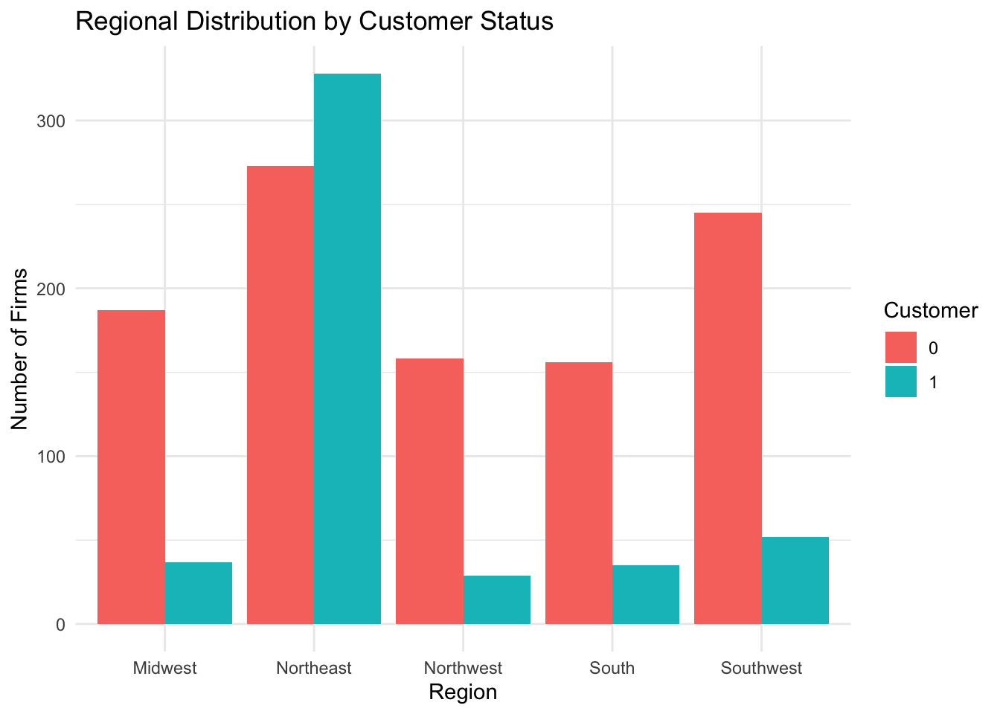
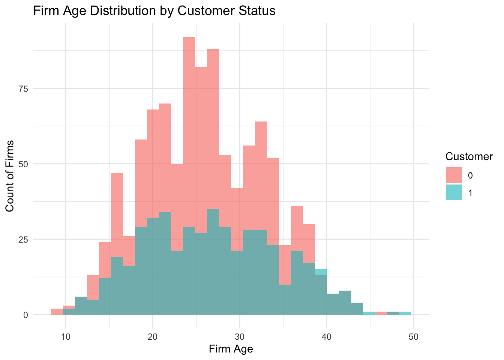

Poisson Regression and Maximum Likelihood Estimation
A Case Study of Blueprinty’s Software and Patent Awards
Author
Yoko He
Published
May 16, 2026
Introduction
Blueprinty is a small software company that develops blueprint-design tools specifically intended for firms submitting patent applications to the United States Patent Office. The company’s marketing team would like to claim that firms using Blueprinty’s software are more successful in obtaining patents than firms that do not use the software.
Ideally, evaluating this claim would require panel data tracking firms before and after adopting Blueprinty’s software. Such a dataset would make it easier to isolate the effect of the software itself. However, no such longitudinal data are available.
Instead, Blueprinty has collected cross-sectional data on 1,500 mature engineering firms. The dataset includes the number of patents awarded to each firm over the past five years, whether the firm uses Blueprinty’s software, the age of the firm since incorporation, and the region in which the firm operates.
Although customers of Blueprinty’s software may appear to receive more patents on average, this difference cannot immediately be interpreted as evidence that the software causes better outcomes. Firms are not randomly assigned to use Blueprinty’s software. Older firms, firms in certain regions, or firms with stronger innovation capabilities may be more likely both to adopt the software and to receive more patents. As a result, a simple comparison of average patent counts between customers and non-customers may be misleading.
To better understand this relationship, this analysis uses Poisson regression estimated via Maximum Likelihood Estimation (MLE), which is well suited for modeling count data such as the number of patents awarded.
Exploring the Data
We begin by reading the dataset and comparing the distribution of patent counts between Blueprinty customers and non-customers.
library(tidyverse)
── Attaching core tidyverse packages ──────────────────────── tidyverse 2.0.0 ──
✔ dplyr 1.1.4 ✔ readr 2.1.5
✔ forcats 1.0.1 ✔ stringr 1.5.2
✔ ggplot2 4.0.0 ✔ tibble 3.3.0
✔ lubridate 1.9.4 ✔ tidyr 1.3.1
✔ purrr 1.1.0
── Conflicts ────────────────────────────────────────── tidyverse_conflicts() ──
✖ dplyr::filter() masks stats::filter()
✖ dplyr::lag() masks stats::lag()
ℹ Use the conflicted package (<http://conflicted.r-lib.org/>) to force all conflicts to become errors
blueprinty <-read_csv("blueprinty.csv")
Rows: 1500 Columns: 4
── Column specification ────────────────────────────────────────────────────────
Delimiter: ","
chr (1): region
dbl (3): patents, age, iscustomer
ℹ Use `spec()` to retrieve the full column specification for this data.
ℹ Specify the column types or set `show_col_types = FALSE` to quiet this message.
blueprinty %>%ggplot(aes(x = patents)) +geom_histogram(binwidth =1, fill ="steelblue", color ="white") +facet_wrap(~iscustomer) +labs(title ="Distribution of Patents by Customer Status",x ="Number of Patents",y ="Count of Firms" ) +theme_minimal()
The histogram suggests that Blueprinty customers tend to have higher patent counts than non-customers. The mean comparison also shows whether customers receive more patents on average. However, this raw comparison does not prove that Blueprinty’s software causes higher patent outcomes because customers may differ from non-customers in other ways.
blueprinty %>%count(region, iscustomer) %>%ggplot(aes(x = region, y = n, fill =factor(iscustomer))) +geom_col(position ="dodge") +labs(title ="Regional Distribution by Customer Status",x ="Region",y ="Number of Firms",fill ="Customer" ) +theme_minimal()

The regional distribution differs between Blueprinty customers and non-customers. This matters because firms located in different regions may face different innovation environments and patent opportunities. Regional differences could therefore influence patent counts independently of Blueprinty’s software.
blueprinty %>%ggplot(aes(x = age, fill =factor(iscustomer))) +geom_histogram(alpha =0.6, position ="identity", bins =30) +labs(title ="Firm Age Distribution by Customer Status",x ="Firm Age",y ="Count of Firms",fill ="Customer" ) +theme_minimal()

Firm age also differs between customer and non-customer firms. Older firms may naturally accumulate more patents due to greater experience, larger research teams, or stronger financial resources. Because of this, it is important to control for firm age in the regression analysis.
A Simple Poisson Model via Maximum Likelihood
The outcome variable in this dataset is a count: the number of patents awarded to each firm over the last five years. Since patent counts cannot be negative and must be whole numbers, a Normal distribution is not a good starting point. A Poisson distribution is more appropriate because it is designed for non-negative integer outcomes.
For a single observation, the Poisson probability function is:
The numerical maximum likelihood estimate of () is very close to the sample mean of the patent counts. This makes sense because, in a simple Poisson model with one common rate parameter, the MLE for () is the average count in the sample.
In the simple Poisson model above, every firm was assumed to share the same expected patent rate (). However, firms differ in characteristics such as age, region, and customer status, so it is more realistic to allow each firm to have its own expected patent rate.
To account for these differences, we extend the model into a Poisson regression framework. The exponential link function ensures that predicted patent rates remain positive.
blueprinty <- blueprinty %>%mutate(region =factor(region),iscustomer =factor(iscustomer) )poisson_reg <-glm( patents ~ age +I(age^2) + region + iscustomer,family =poisson(),data = blueprinty)summary(poisson_reg)
Call:
glm(formula = patents ~ age + I(age^2) + region + iscustomer,
family = poisson(), data = blueprinty)
Coefficients:
Estimate Std. Error z value Pr(>|z|)
(Intercept) -0.508920 0.183179 -2.778 0.00546 **
age 0.148619 0.013869 10.716 < 2e-16 ***
I(age^2) -0.002971 0.000258 -11.513 < 2e-16 ***
regionNortheast 0.029170 0.043625 0.669 0.50372
regionNorthwest -0.017574 0.053781 -0.327 0.74383
regionSouth 0.056561 0.052662 1.074 0.28281
regionSouthwest 0.050576 0.047198 1.072 0.28391
iscustomer1 0.207591 0.030895 6.719 1.83e-11 ***
---
Signif. codes: 0 '***' 0.001 '**' 0.01 '*' 0.05 '.' 0.1 ' ' 1
(Dispersion parameter for poisson family taken to be 1)
Null deviance: 2362.5 on 1499 degrees of freedom
Residual deviance: 2143.3 on 1492 degrees of freedom
AIC: 6532.1
Number of Fisher Scoring iterations: 5
The Poisson regression model estimates how patent counts vary with observable firm characteristics. The model includes firm age, age squared, regional indicators, and Blueprinty customer status.
Including age squared allows the relationship between firm age and patent counts to be nonlinear. Regional controls account for differences across geographic markets.
The coefficient on customer status measures the association between Blueprinty software usage and expected patent counts after controlling for other observable characteristics.
The regression results suggest that firms using Blueprinty’s software tend to receive more patents on average, even after controlling for firm age and regional differences.
However, these results should not be interpreted as definitive causal evidence. Firms are not randomly assigned to use Blueprinty’s software, so unobserved differences between firms may still affect patent outcomes. Nevertheless, the results are consistent with the claim that Blueprinty’s software is associated with higher patent success rates.
The Effect of Blueprinty’s Software
The coefficients from a Poisson regression are not directly interpretable as “additional patents” because the model is multiplicative rather than additive. To obtain a more interpretable estimate, we compare predicted patent counts under two counterfactual scenarios.
In the first scenario, every firm is treated as if it were not a Blueprinty customer. In the second scenario, every firm is treated as if it were a Blueprinty customer. The difference between these predictions provides an estimate of the average association between Blueprinty software usage and patent outcomes.
The regression results suggest that firms using Blueprinty’s software tend to receive more patents on average, even after controlling for firm age and regional differences.
However, these results should not be interpreted as definitive causal evidence. Firms are not randomly assigned to use Blueprinty’s software, so unobserved differences between firms may still affect patent outcomes. Nevertheless, the results are consistent with the claim that Blueprinty’s software is associated with higher patent success rates.